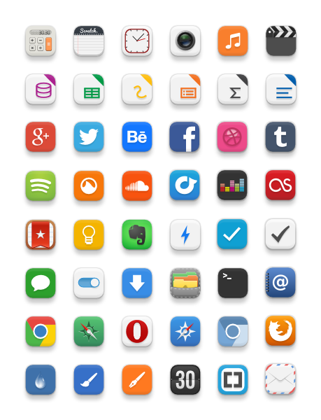
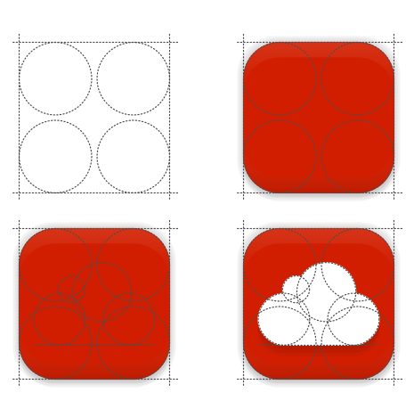
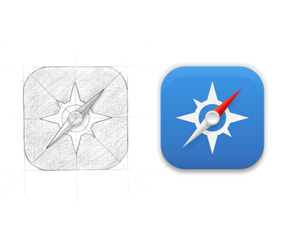
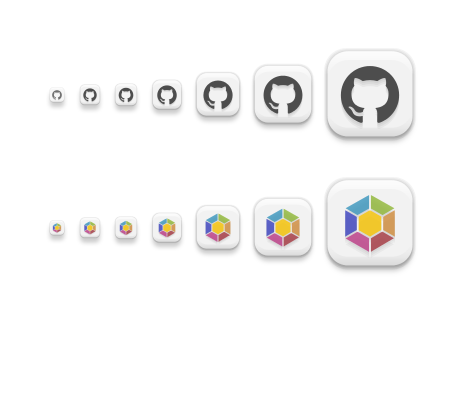

Installation
You have two possibilities to install.
1. Manually:
Download the .zip file, extract it and place the folder Pacifica and Pacifica-U in
/home/user/.icons or usr/share/icons
PS: Pacifica is for elementary users and Pacifica-U for ubuntu usersand the changes only affect unity-panel and wingpanel (i.e. the panels at the top of the screen).
2. PPA:
Add the official PPA from launchpad for elementary OS or Ubuntu (Precise, Quantal, Raring, Saucy)
sudo add-apt-repository ppa:fsvh/pacifica-icon-theme
sudo apt-get update
sudo apt-get install pacifica-icon-theme
Keep working
I'll keep working on this project and will try support to your favorite applications. The list of applications is very long, so please help me to stay motivated. Consider a small (even a dollar) donation please. (You don't need a paypal account to use their services.)
What is the next step?
If you are a Pacifica Icon Theme user, you already know that we don't have our own icon for folders. I'm looking for ideas and will try to do my best to create a nice icon for you.
Sometimes I take my time to create icons because I want to give the best of me on this project, so keep calm and drink a coffee.


Would you like an icon?
If you need an icon that isn't in the pack, you can submit your request on the following form, but be patient and maybe this icon will join the next update.
If you would like to contribute, you can also do it. Now you have at your disposal three generic background icons on .svg extension. Send me your icons at fsvh@me.com.
Bugs and Issues
If you find a problem with the Pacifica Icon Theme please report it. This will take you 5 minutes but me and other users will appreciate your help. You can find me on Github and Launchpad but if you don't have an account send me an email at fsvh@me.com.
Also if you have some ideas how to improve the icons, or the construction of the pack, don't hesitate to contact me.
Thank you so much!!!
